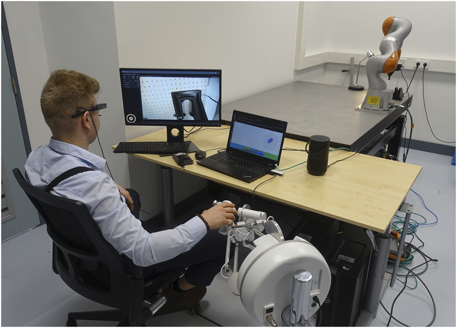

Visio-Verbal Teleimpedance Interface:
Enabling Semi-Autonomous Control of Physical Interaction via Eye Tracking and Speech

Project summary
This master thesis introduced a visio-verbal teleimpedance interface that combines gaze and speech to command 3D stiffness ellipsoids for semi-autonomous robot interaction. A vision-language model interprets scene context and intent to map verbal commands to physical behavior, enabling intuitive adjustments of robot compliance during contact tasks. The system was validated on a haptic teleoperation setup with a KUKA LBR iiwa in a slide-in-the-groove experiment, demonstrating accurate and efficient control.
The work was published in Frontiers in Robotics and AI and is also available on arXiv. I am grateful to my supervisors, Luka Peternel and Alejandro Diaz Rosales. This research was a collaboration between Delft University and CERN.
Project documents
The papers:
The extended paper gives more background information on the experiments and physics.
The presentation:
Product
The product is a visio-verbal teleimpedance command interface for teleoperation. It lets operators adjust 3D translational stiffness in real time using gaze and speech, enabling hands-free control without diverting visual attention. The system generates task-appropriate stiffness matrices, manages conversation history for iterative refinement, and maintains stable interaction forces, demonstrated on a 3D slide-in-the-groove test. This approach reduces cognitive load and removes the need for extra input devices, while supporting intuitive, task-specific robot compliance.
Code implementation
Hidden for now